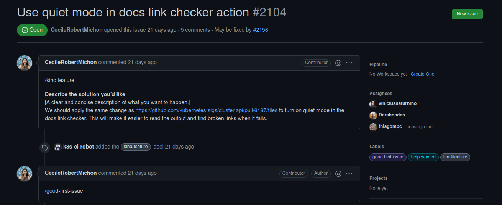
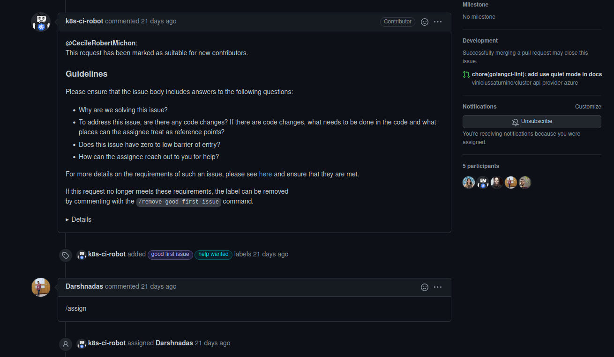
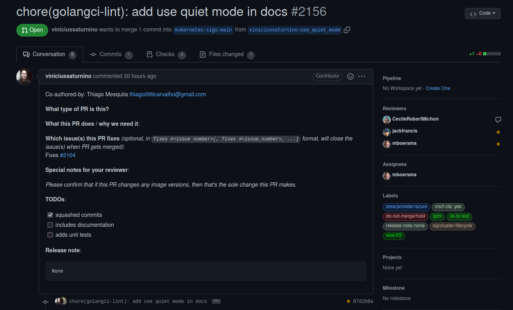
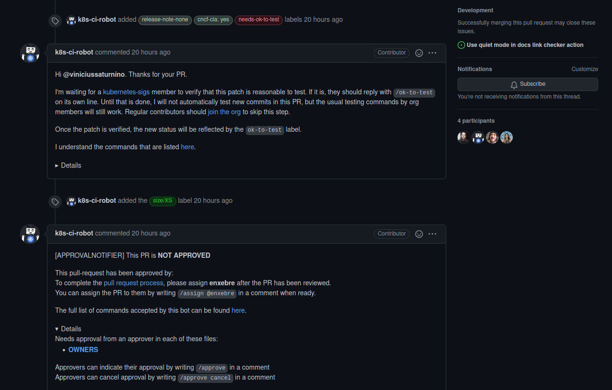
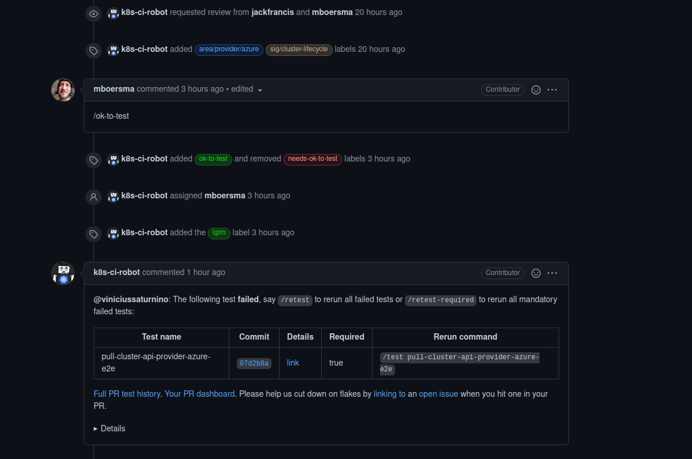
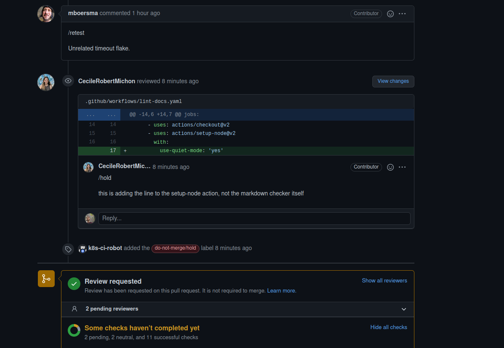

Issue #2104 Use quiet mode in docs link checker action
A issue 2104 é uma issue voltada para a configuração do link-checker contido no lint-docs. A configuração em questão é a adição da configuração do step use quiet mode dentro do job markdown-link-check, com a finalidade de exibir os erros de links quebrados no markdown apenas no output, para facilitar a leitura e a identificação de links quebrados no documento.
| Página | Status | Responsável |
|---|---|---|
| Cluster Api Provider Azure | PR em revisão | Vinicius Saturnino e Thiago Mesquita |
Discussão da Issue



Pull Request aberto
Após a contribuição, foi aberto um Pull Request




Pull Request Aprovado
Histórico de Revisão
| Data | Versão | Descrição | Autor |
|---|---|---|---|
| 10/03/22 | 0.1 | Criação do documento acerca do PR aprovado | Thiago Mesquita e Vinícius Saturnino |